Teaching people to work with AI, not to prompt it.
Three pieces of evidence, built for different subjects across three years: a live internal AI hub that takes a product-experience organization from curiosity to working setups; a monthly two-day hackathon whose winning build is going into production; and a five-module design curriculum built and taught from scratch. All three start the same way — teach the mental model first, then build a situation where people have to use it.
PX Hub — the AI front door for a design organization
An internal site I designed, wrote, and shipped alone, and now maintain as the place the Product Experience team goes to learn AI. Not a deck about AI adoption — the actual surface people open when they don't know where to start.
The problem it solves is the one every enterprise AI rollout hits: tooling gets approved, licenses get bought, and then nothing happens, because the distance between "we have Cursor" and "I built something" is a dozen undocumented steps that nobody will admit they're stuck on. The Hub closes that distance in public — plain language, ordered steps, a checklist that remembers where you left off, and a FAQ that answers the questions people are embarrassed to ask out loud.
- Role
- Sole designer, writer, builder
- Audience
- PX org — designers & PMs, mostly non-engineers
- Surface
- Docs · FAQ · Learn · About · Knowledge
- Status
- Live and maintained, indexed Aug 2026
The front door
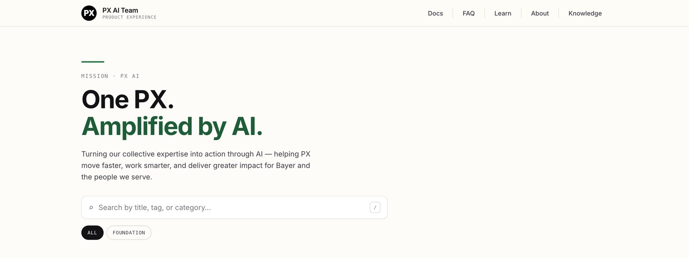
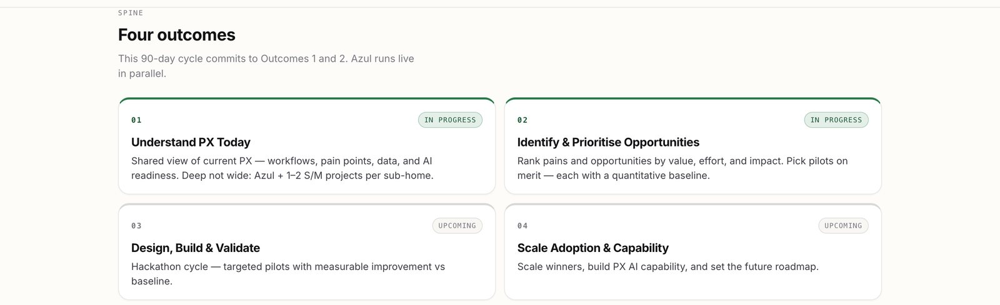
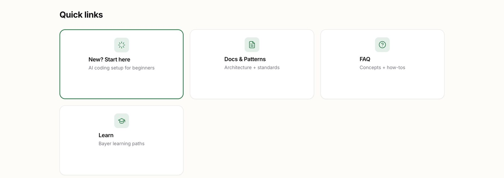
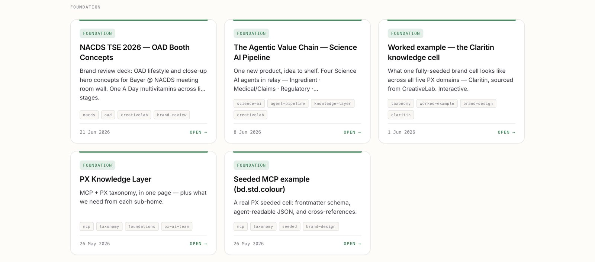
The learning design
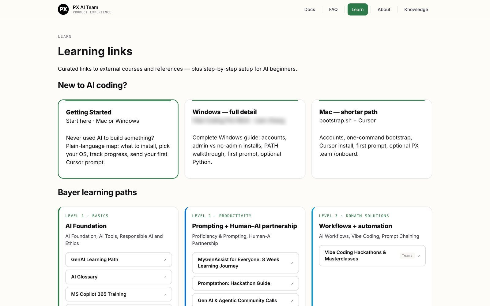
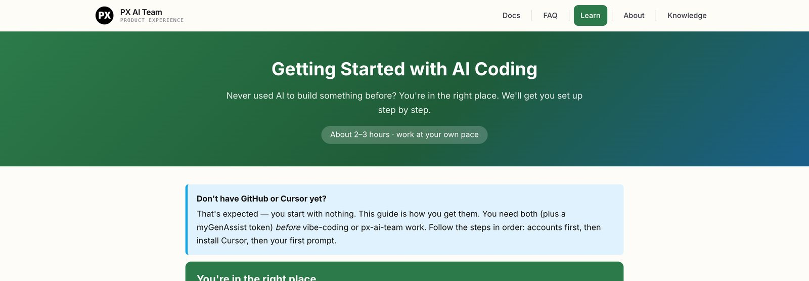
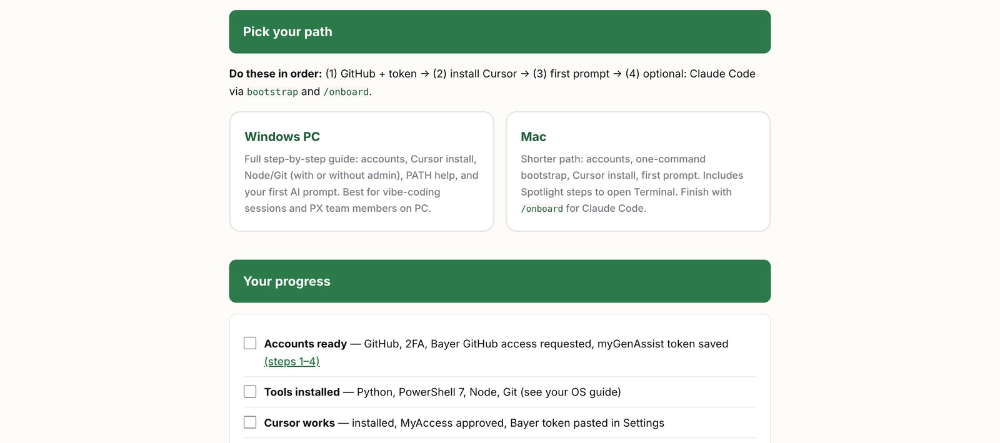
“AI coding means you describe what you want in plain English, and the tool writes or edits code for you. You still review the output — you're the boss, not the AI.”
From the Getting Started guide. The whole pedagogy is in that last clause: the learner stays the decision-maker, and the tool is a fast collaborator with no authority.
Answering what people won't ask aloud
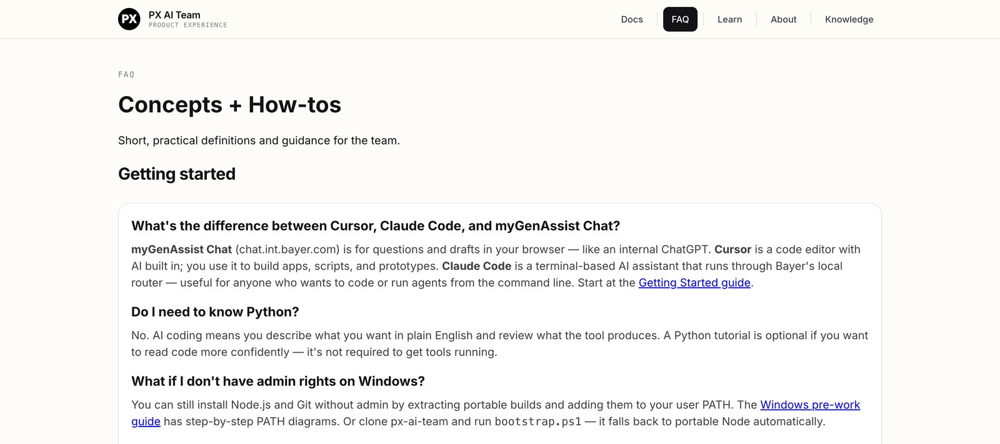
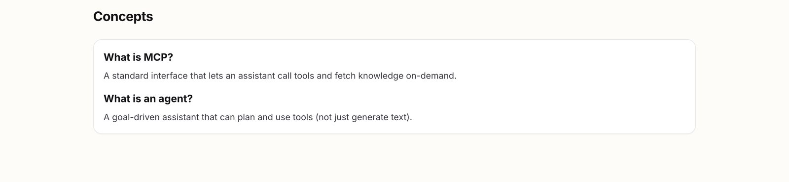
Depth underneath the on-ramp
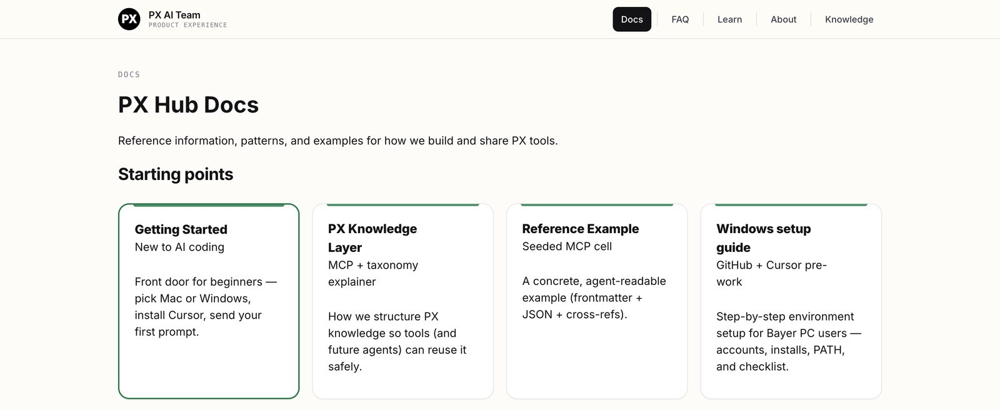
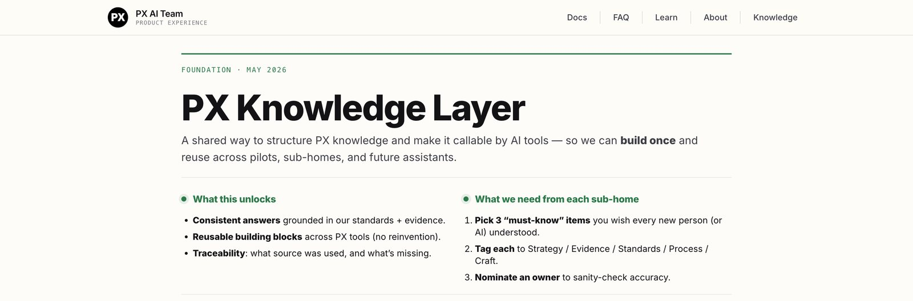
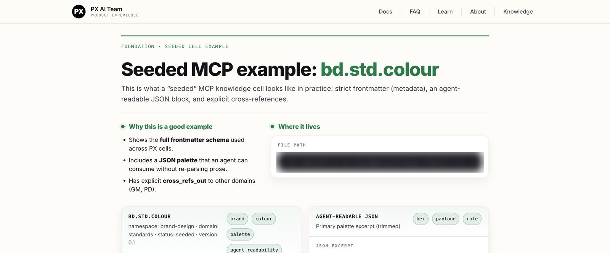
Hackathons — teaching by building a situation nobody leaves empty-handed
A two-day AI hackathon, now run monthly for each department across the science organization. The first ran in June 2026 with the medical sub-home and produced seven tools ready to scale. Its winning build — a medical content generator — is currently being launched across the medical team.
This is the part of enablement I care most about, because it is the only format that clears the bar the work is actually judged on. A deck produces completion. A workshop produces comprehension. A hackathon produces an artifact — the person walks out having built something, which is behavior rather than sentiment, and unlike a satisfaction score you can put it on a table. It is also the same move as everything else here: rather than teach AI harder, I built a situation people cannot leave without having made something. The lesson is the format.
- Cadence
- Monthly, one per department
- Format
- Two full days, ~12 teams
- Output, day one
- Seven tools ready to scale
- Role
- Master classes · facilitator · embedded coach · judge
The teaching happens before the room
A hackathon with no on-ramp sorts people by who already knew how — the confident build, everyone else watches, and the event quietly confirms the hierarchy it was meant to dissolve. So the two days are the second half of a taught sequence. In the run-up we hold master classes on how to use AI and how to vibe-code, aimed at people who have never built software, so that on the day the barrier is an idea rather than a text editor.
Who sits at the table together
The teams are deliberately mixed: domain experts paired with the organization's AI and IT champions. That is the part I would defend in any version of this. If you put only technologists in the room you get clever things nobody needed; if you put only domain experts in the room you get needed things nobody can build. Pairing them on something real means the learning travels both directions in the same two days — the clinician learns what is now buildable, and the engineer learns what is actually worth building. Neither of them sat through a course to get there.
On the day I am not at the front
I facilitate, then I join teams — sitting inside a group as a floating pair of hands, unblocking the thing that would otherwise eat their afternoon. Then I judge. Coaching and judging in the same two days is an unusual combination and a deliberate one: it means the standard I am judging against is one I have just spent a day helping people reach, rather than one I imported from outside the room. And on the first one I ended up building: a team lost a member partway through, so I stepped in so they could still ship — prototyping a way to read a very large pile of unstructured consumer feedback. We did not place, which I think is the useful part. Running the format is one thing; spending two days inside the constraint you are asking everyone else to accept is another, and it is the only way to find out whether the constraint is fair. The deck we pitched ends on a line I am fond of: “since this prototype was built in only one day, the app has its limitations.”
One two-day event produced seven tools ready to scale, and the winning build is currently being launched across the medical team.
Which is the whole argument in one line. A format I ran produced working software that is going into production — not a certificate, not a completion rate. And it is not the only one: a radiology hackathon I contributed to produced a field-sales application — reps had been looking up parts for hospital customers in Excel — which is now being developed for use in the field. Two hackathons, two pieces of software that outlived the event.
A design curriculum built from first principles
Before the AI work, the same instinct applied to design itself: a five-module program for the Bayer Consumer Health design organization — cognitive science, process, briefing, feedback and a worked case study. I co-authored all five, with our design partners and agencies, and delivered the training.
It matters here because the pedagogy is identical to what the Hub does now. Teach the model of how the thing works before teaching the thing. Give the learner a rubric they can apply without you in the room. Then make them use it on real work while the answer is still hidden.
- Scale
- 189 slides across five modules
- Anchor
- Cognitive science — 103 slides
- Structure
- Science → strategies → exercise → recall
- Role
- Co-author across all five modules · presenter
Model first
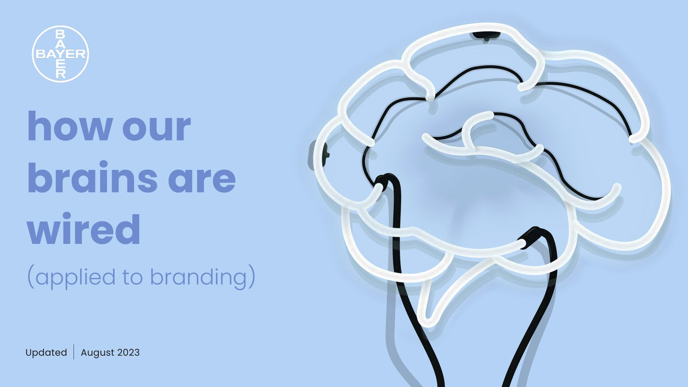
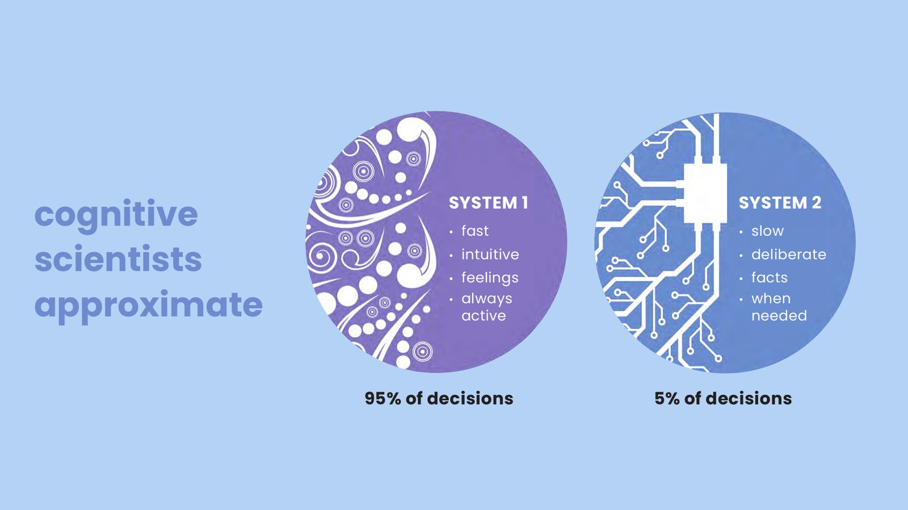


Then make them practice
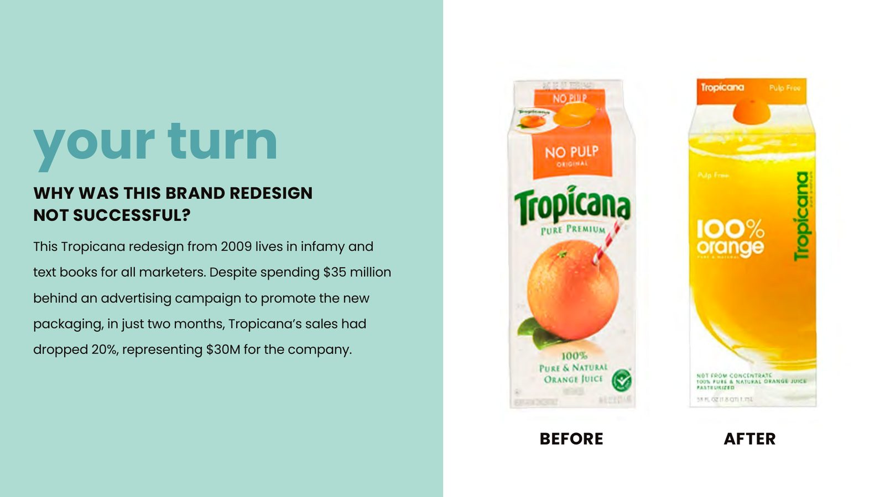

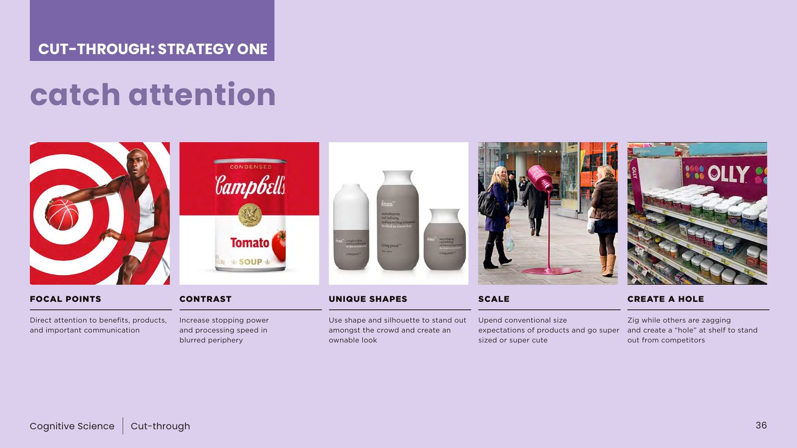
And leave them something usable


- 01Cognitive Science — 103 slides. Why people decide what they decide, and the four-part rubric that follows from it.
- 02Design Process — 32 slides. What the discipline actually does, across strategy, expression, and experience.
- 03Design Briefs — 29 slides. Good to remarkable, with a graded exercise after every concept.
- 04Creative Feedback — 19 slides. Running reviews that move work forward instead of flattening it.
- 05Midol Case Study — 6 slides. The frameworks applied end-to-end to one brand.
The method is older than the subject
Both cases above make the same move, and neither is where I learned it. Between 2011 and 2019 I taught drawing to more than a thousand beginners — mostly public classes of twenty-five to fifty, mostly people who had not come to learn anything. Telling them their eye lies to them never worked: every one agreed, then drew the symbol of a hand again thirty seconds later.
“Hold the pencil up. Measure the angle. Not see better — measure.”
Everything above is a version of that: put the lesson where the decision happens, so it survives the moment nobody is thinking about it.